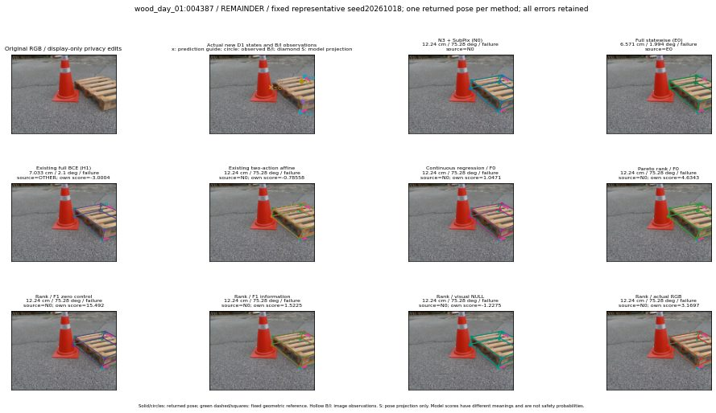

실선은 반환 자세, 초록 점선은 고정 기하 참조입니다. S는 영상 관측이 아닙니다. 점수는 모델별 의미가 다르며 보정된 안전 확률이 아닙니다. 개인정보 처리는 표시 사본에만 적용했습니다.
| 방법·seed | 위치 / 회전 / 공동성공 | 실제 출처 | 선택 후보 | 각 모델 자체 점수 |
|---|---|---|---|---|
| N0 | 12.24 cm / 75.28 deg / failure | N0 | N/A | N/A |
| E0 | 6.571 cm / 1.994 deg / failure | E0 | N/A | N/A |
| E0_REGENERATED | 6.571 cm / 1.994 deg / failure | E0 | E0_REGENERATED | N/A |
| POSEFIX_SUBPIX_PF_ANCHOR | 105.8 cm / 64.99 deg / failure | OTHER | N/A | N/A |
| POSEFIX_SUBPIX_YOLO_ANCHOR | 16.64 cm / 74.95 deg / failure | OTHER | N/A | N/A |
| D1_H1_MLP_s20261018 | 7.033 cm / 2.1 deg / failure | OTHER | G10/SWAPPED_WD/endpoint/99 | -3.000431537628174 |
| D1_H1_MLP_s20261019 | 7.033 cm / 2.1 deg / failure | OTHER | G10/SWAPPED_WD/endpoint/99 | -2.9353833198547363 |
| D1_H1_MLP_s20261020 | 7.033 cm / 2.1 deg / failure | OTHER | G10/SWAPPED_WD/endpoint/99 | -3.9031193256378174 |
| D1_H1_PAIR_MLP_s20261018 | 12.24 cm / 75.28 deg / failure | N0 | N0 | -2.0157687664031982 |
| D1_H1_PAIR_MLP_s20261019 | 12.24 cm / 75.28 deg / failure | N0 | N0 | -1.8011178970336914 |
| D1_H1_PAIR_MLP_s20261020 | 12.24 cm / 75.28 deg / failure | N0 | N0 | -2.0575196743011475 |
| D1_H1_PAIR_ROLE_AFFINE_s20261018 | 12.24 cm / 75.28 deg / failure | N0 | N0 | -0.7855833768844604 |
| D1_H1_PAIR_ROLE_AFFINE_s20261019 | 12.24 cm / 75.28 deg / failure | N0 | N0 | -1.134265661239624 |
| D1_H1_PAIR_ROLE_AFFINE_s20261020 | 12.24 cm / 75.28 deg / failure | N0 | N0 | -0.8187972903251648 |
| R_CONT_F0_s20261018 | 12.24 cm / 75.28 deg / failure | N0 | N0 | 1.047127604484558 |
| R_CONT_F0_s20261019 | 12.24 cm / 75.28 deg / failure | N0 | N0 | 1.3870354890823364 |
| R_CONT_F0_s20261020 | 12.24 cm / 75.28 deg / failure | N0 | N0 | 1.338281273841858 |
| R_ORDER_F0_s20261018 | 12.24 cm / 75.28 deg / failure | N0 | N0 | 4.634310245513916 |
| R_ORDER_F0_s20261019 | 12.24 cm / 75.28 deg / failure | N0 | N0 | 1.0971157550811768 |
| R_ORDER_F0_s20261020 | 12.24 cm / 75.28 deg / failure | N0 | N0 | -8.534139633178711 |
| R_ORDER_F1_ZERO_s20261018 | 12.24 cm / 75.28 deg / failure | N0 | N0 | 15.492058753967285 |
| R_ORDER_F1_ZERO_s20261019 | 12.24 cm / 75.28 deg / failure | N0 | N0 | -1.6935877799987793 |
| R_ORDER_F1_ZERO_s20261020 | 12.24 cm / 75.28 deg / failure | N0 | N0 | 5.993745803833008 |
| R_ORDER_F1_s20261018 | 12.24 cm / 75.28 deg / failure | N0 | N0 | 1.5225014686584473 |
| R_ORDER_F1_s20261019 | 12.24 cm / 75.28 deg / failure | N0 | N0 | 4.255512237548828 |
| R_ORDER_F1_s20261020 | 12.24 cm / 75.28 deg / failure | N0 | N0 | -1.5983493328094482 |
| V_ORDER_NULL_s20261018 | 12.24 cm / 75.28 deg / failure | N0 | N0 | -1.227536916732788 |
| V_ORDER_NULL_s20261019 | 12.24 cm / 75.28 deg / failure | N0 | N0 | -0.5373751521110535 |
| V_ORDER_NULL_s20261020 | 12.24 cm / 75.28 deg / failure | N0 | N0 | 4.425314426422119 |
| V_ORDER_RGB_s20261018 | 12.24 cm / 75.28 deg / failure | N0 | N0 | 3.1696622371673584 |
| V_ORDER_RGB_s20261019 | 12.24 cm / 75.28 deg / failure | N0 | N0 | 0.09814251959323883 |
| V_ORDER_RGB_s20261020 | 7.033 cm / 2.1 deg / failure | OTHER | G10/SWAPPED_WD/endpoint/99 | -9.525949478149414 |